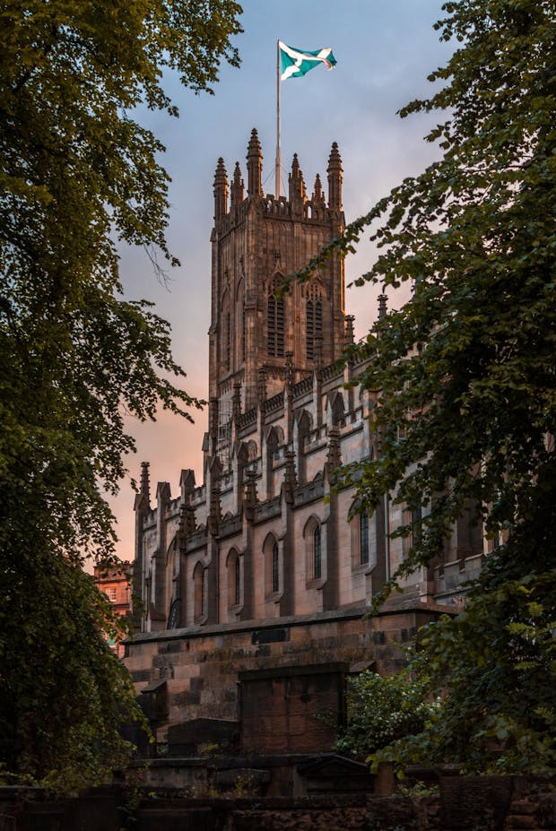
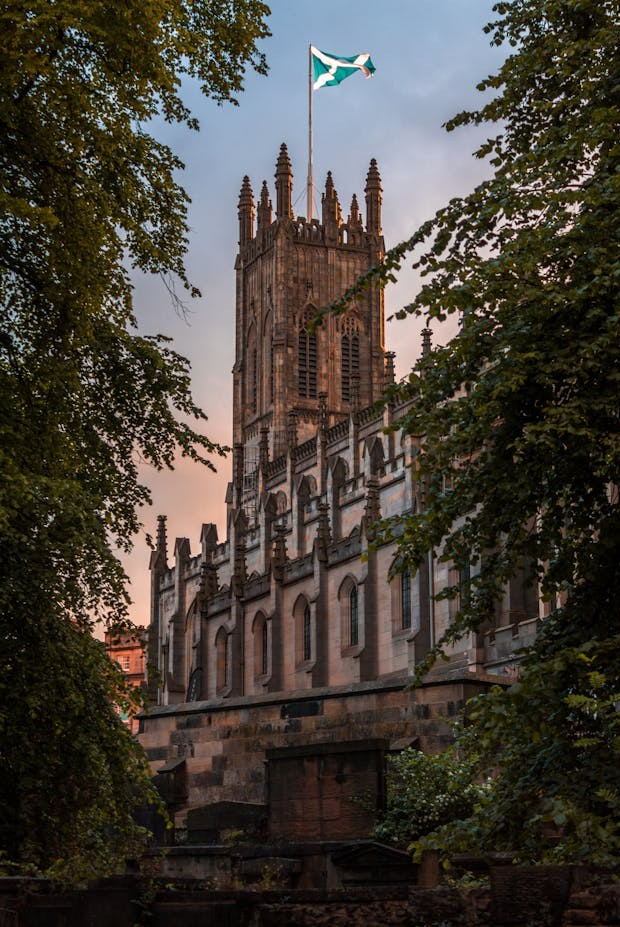
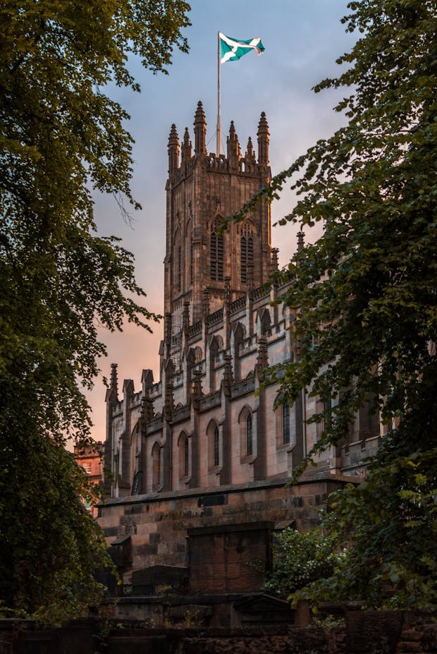
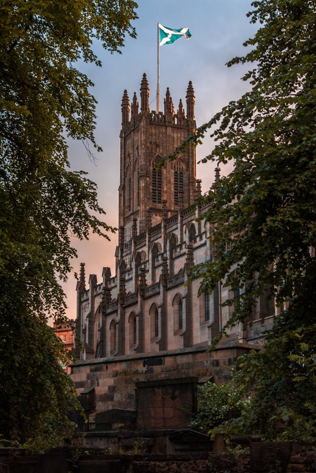

Highlands
✖Weather in
Scotland captivates visitors with its rugged landscapes, rich history, and vibrant culture. The country's dramatic Highlands, with their misty mountains, glistening lochs, and sweeping glens, offer an unforgettable retreat for nature lovers. From the iconic Loch Ness to the majestic Isle of Skye, Scotland's natural beauty is as diverse as it is breathtaking. Historic cities like Edinburgh, with its medieval Old Town and the imposing Edinburgh Castle, provide a glimpse into Scotland's storied past, while Glasgow's lively arts scene and modern flair showcase the country's contemporary energy.
Beyond its scenery and history, Scotland offers a warm and welcoming cultural experience. Traditional music and dance, best experienced at a lively ceilidh, bring its heritage to life. Culinary delights like haggis, Cullen skink, and buttery shortbread are paired perfectly with a dram of world-famous Scotch whisky, making dining in Scotland a unique pleasure. Quaint villages, dramatic castles, and festivals like the Edinburgh Fringe create an atmosphere where tradition and creativity coexist harmoniously. Whether exploring the historic cobbled streets, hiking the windswept trails, or tracing your ancestry, Scotland promises a journey filled with wonder, warmth, and unforgettable memories.